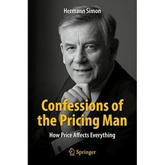
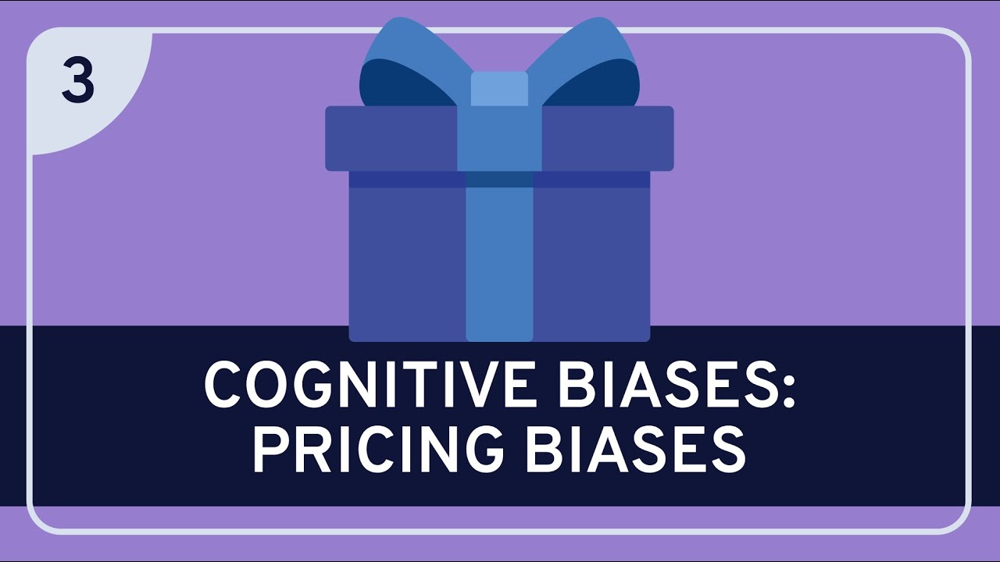

Módulo 02 / Apartado 3 de 5
Rumelt y el núcleo de la estrategia
La tercera escuela, y para Recuenco el suelo sobre el que se apoyan las otras dos.
Quién es y de qué está harto
Richard Rumelt da clase de estrategia en la UCLA y lleva medio siglo leyendo documentos titulados «Plan Estratégico» que no contienen ninguna estrategia. Contienen objetivos, valores, y una lista de cosas buenas que a la empresa le gustaría que pasaran.
Su tesis no es que esos documentos estén mal redactados. Es que la mayoría de la gente que los firma no sabe qué es una estrategia, y por eso escribe otra cosa convencida de estar escribiendo eso.
No es una visión («ser el referente del sector»). No es un objetivo («crecer un 20%»). No es una lista de valores. Y no es un presupuesto con iniciativas colgando.
Todo eso puede acompañar a una estrategia, pero ninguna de esas cosas te dice cómo vas a superar un obstáculo concreto. Y si no hay obstáculo nombrado, no hay nada que superar.
El núcleo
Le llama kernel, núcleo. Tres piezas, y el orden importa porque cada una depende de la anterior. Si falta una, no tienes una estrategia.
Las cuatro señales de que te venden humo
La parte del libro que más se usa, porque funciona como detector en tiempo real.
- Palabrería
- Jerga que suena profunda y no dice nada. Y con esto Rumelt da una prueba de diez segundos: ¿podría tu competidor publicar este documento tal cual? Si le encajaría perfectamente, no tienes estrategia, tienes relleno.
- No afrontar el problema
- El documento no nombra ninguna dificultad concreta. Y si no se nombra el obstáculo, no hay manera de juzgar si el plan sirve, porque no se sabe para qué era.
- Objetivos disfrazados de estrategia
- Metas y porcentajes sin método debajo. Cada línea contesta a qué, ninguna contesta a cómo ni a por qué ahora.
- Malos objetivos estratégicos
- O bien reformulan el problema como si fuera la solución, o bien son una lista de veinte iniciativas donde ninguna es más importante que otra. Eso último suele significar que cada departamento metió la suya.
Por qué esto es el centro de todo
Rumelt es el único autor del temario que trata el diagnóstico como el trabajo principal, y no como el preámbulo del trabajo. Esa es exactamente la tesis del CPS: la mayoría de los fracasos no son de ejecución, son de haber resuelto bien el problema equivocado.
Y Recuenco le da un crédito que no le da a nadie más: dice que fue el primero que escribió que estrategia y resolución de problemas son la misma actividad. Si eso es cierto, Rumelt no es una de las tres escuelas de este módulo. Es el suelo sobre el que se apoyan las otras dos.
El maltrato diario a la palabra
Hay una turra entera dedicada a esto, y el título lo dice: sobre el maltrato al que se somete todos los días a la estrategia. Su queja va en la misma dirección que la de Rumelt, con más mala leche.
Que todo el mundo quiera ser el estratega porque suena a «el que piensa» frente a «el que ejecuta». Que se llame estrategia a la comunicación, al calendario o al presupuesto. Y una consecuencia concreta que verás en el módulo 5: cuando el que manda de verdad en la empresa es el director financiero, la estrategia se convierte en un anexo del presupuesto.
El límite de Rumelt. Escribe pensando en organizaciones donde alguien manda de verdad. Cuando un problema tiene varios dueños con intereses cruzados y nadie puede imponer una política rectora, el núcleo describe algo que no se puede construir. Para eso hará falta el CATWOE de Checkland, en el módulo 5.
Fuentes de este apartado
Las turras de las que sale
La turra de este apartado. Va sobre cómo se ha vaciado la palabra estrategia y quién sale ganando con eso. Enlaza la charla de Rumelt en Thinkers50 y el libro de Zerubavel sobre el silencio y la negación, que aparece porque muchas veces el obstáculo tiene nombre y nadie lo dice.
La gestión de los vehículos de transmisión de la informaciónTurra · 41 tweetsAquí es donde cita directamente Good Strategy Bad Strategy. El hilo va de precios y de sesgos asociados al precio, y sirve como caso: la mayoría de decisiones de precio son objetivos disfrazados de estrategia.
Los libros
 Good Strategy Bad StrategyRichard Rumelt · 2011
Good Strategy Bad StrategyRichard Rumelt · 2011El libro del apartado, y para Recuenco «hands down el mejor» de estrategia. Alterna casos famosos con demoliciones de planes reales, y es de lectura fácil, cosa rara en el género. Si solo lees uno de estrategia en tu vida, este.
The Elephant in the RoomEviatar Zerubavel · 2006Un sociólogo estudiando el silencio colectivo: cómo grupos enteros acuerdan sin hablarlo no mencionar lo evidente. Sale en la turra de la estrategia por un motivo directo: la primera señal de mala estrategia es no afrontar el problema, y este libro explica el mecanismo social que lo hace posible.

Confessions of the Pricing ManHermann Simon · 2015El libro de precios que cita en la turra de los vehículos de transmisión. Sirve como aterrizaje del kernel: el precio es la decisión donde más se nota si hay diagnóstico detrás o solo un objetivo de margen.
Para ver
El propio Rumelt resumiendo su idea central en formato corto. Va directo al núcleo y a por qué el diagnóstico es la parte que se salta todo el mundo. Es la manera más rápida de oírselo a él en vez de a mí.

Sesgos cognitivos aplicados al precioDivulgación · en inglésLo enlaza en la turra de precios. Repasa los sesgos que hacen que las decisiones de precio se tomen mal de forma sistemática, que es un ejemplo perfecto de objetivo sin diagnóstico.